As essências são utilizadas para imitar os sabores das frutas.
Nosso nariz contém detectores sensoriais que transmitem o sabor de um produto para os receptores gustativos da boca. Por isso, o aroma afeta, diretamente, o sabor de um alimento e é um aspecto determinante para o consumo alimentar,
em especial para pessoas com o olfato apurado.
Os aromas são formados pela combinação de substâncias orgânicas, como ésteres, ácidos carboxílicos, cetonas, aldeídos e álcoois. Um exemplo é a função éster, presente em dois compostos, de fórmula molecular C6H12O2, que são usados
pelas indústrias de balas e chicletes nas essências com sabores de abacaxi (butanoato de etila) e de framboesa (etanoato de butila). Os dois compostos são isômeros, ou seja, têm a mesma fórmula molecular, mas diferentes fórmulas
estruturais, o que resulta na diferença dos sabores notados.
Se é assim, como um químico deve rotular o conteúdo dos frascos que contêm essência de abacaxi ou de framboesa? Não basta apenas colocar a fórmula molecular. O correto é colocar a fórmula molecular e o nome da substância, ou a
fórmula estrutural e o nome da substância, ou apenas o nome da substância.
Qual é a relação entre o ácido caproico (responsável pelo aroma das cabras) e o butanoato de etila (responsável pelo aroma do abacaxi)?
Um hidrocarboneto apresenta isomeria de função?
Neste capítulo serão abordadas as habilidades
EM13CNT201
,
EM13CNT303
e
EM13CNT307
.
O conceito de isomeria
Os
isômeros – do grego,
isosmeros que significam, respectivamente, “iguais” e “partes” – são substâncias que têm
a mesma fórmula molecular, mas cujos átomos estão arranjados de maneiras diferentes e, consequentemente, apresentam
diferentes fórmulas estruturais .
Na Química Orgânica, a fórmula molecular de uma substância caracteriza-a pouco, uma vez que os compostos podem sofrer isomeria. A tabela, a seguir, mostra o número de isômeros possíveis para alguns alcanos. Note como a quantidade
de isômeros varia de composto para composto (de 2 até 62 trilhões de isômeros teoricamente possíveis).
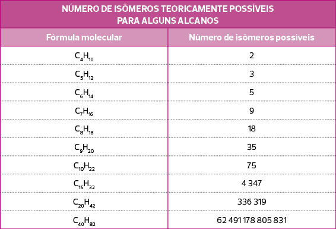
CAREY, F. A.
Organic Chemistry . 7 ed. Nova York: McGraw-Hill, 2008, p. 70.
Apesar de ter fórmula molecular igual, os isômeros são substâncias diferentes, dotadas de propriedades físicas e químicas diferentes. Sob a fórmula C2H6O, por exemplo, podemos representar dois isômeros:
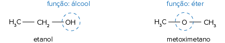
O etanol entra em ebulição a 78 °C, enquanto o metoximetano entra em ebulição a 225 °C. A diferença de temperatura de ebulição entre os dois é consequência do tipo de interação entre as moléculas de cada composto. No caso do etanol,
o átomo de hidrogênio está ligado diretamente ao átomo de oxigênio, o que é próprio de moléculas que interagem por ligação de hidrogênio, o tipo mais intenso de força intermolecular. Por conseguinte, suas moléculas precisam
de temperatura mais elevada para mudar de estado físico. Além disso, o etanol reage com ácidos (conforme reação a seguir), mas o éter não.
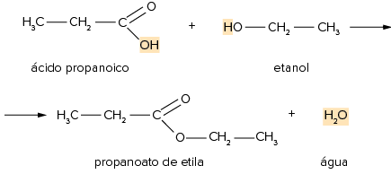
Alterações da estrutura molecular geram isômeros planos ou isômeros constitucionais. Esse tipo de isomeria é dividido em cinco classes, detalhadas a seguir.
Isomeria constitucional de função
Duas ou mais substâncias são classificadas como isômeros de função quando apresentam a mesma fórmula molecular, mas diferentes funções orgânicas. O etanol e o metoximetano são um caso de isomeria de função, uma vez que as duas
substâncias têm a fórmula molecular C2H6O, mas são de funções orgânicas diferentes: álcool e éter.
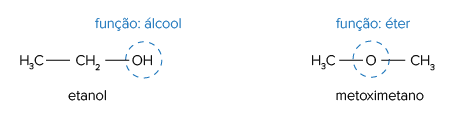
Veja outros pares comuns de isômeros de função:
Éster e ácido carboxílico.
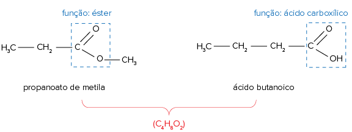
Cetona e aldeído.
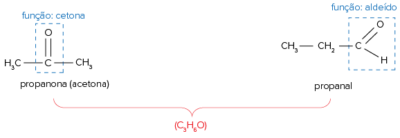
Fenol e álcool aromático.
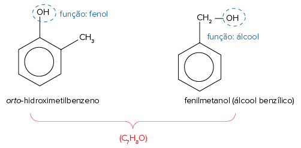
Qualquer isômero de um hidrocarboneto será também um hidrocarboneto, logo
hidrocarbonetos não apresentam isomeria constitucional de função.
Isomeria constitucional dinâmica ou tautomeria
Tautomeria
é um caso especial de isomeria de função, no qual notamos um equilíbrio químico dinâmico entre as substâncias isômeras, ou seja, aquelas com a mesma fórmula molecular. Os pares mais comuns desse tipo de isomeria ocorrem entre:
Enol e aldeído
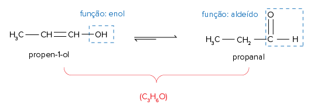
As ligações duplas C = C e C = O são constantemente rompidas e formadas, em um equilíbrio dinâmico, coexistindo as funções enol e aldeído durante o processo. No entanto, como o enol é uma função instável, o equilíbrio tende
a deslocar-se para o sentido de formação de aldeído, o que pode ser observado na dupla seta, mais precisamente na seta de maior tamanho, que aponta para a direita.
Enol e cetona.
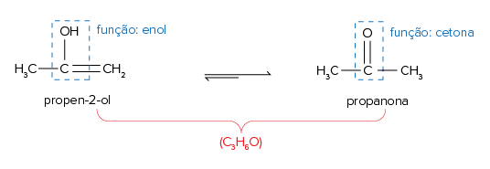
Assim como observado na isomeria enol-aldeído, as ligações duplas C = C e C = O são constantemente rompidas e formadas, em um equilíbrio dinâmico, coexistindo as funções enol e cetona durante o processo. Já que o enol é uma
função instável, o equilíbrio tende a deslocar-se para o sentido de formação da cetona, o que, na dupla seta, pode ser observado na seta de maior tamanho, que aponta para a direita.
Isomeria constitucional de cadeia ou de núcleo
Duas ou mais substâncias são classificadas como isômeros de cadeia ou de núcleo quando apresentam a mesma fórmula molecular, a mesma função orgânica, mas diferentes tipos de cadeia.
Veja alguns exemplos:
Exemplo 1:
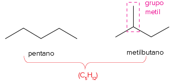
Não confunda enol com álcool. Um álcool apresenta o grupo hidroxila ligado a um carbono saturado, enquanto um enol apresenta um grupo hidroxila ligado a um carbono que faz ligação dupla com o carbono vizinho:
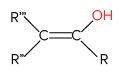
Estrutura de um enol.
Observe que as duas substâncias são hidrocarbonetos de fórmula molecular, mas diferentes cadeias. O pentano tem cadeia aberta, saturada, homogênea e
normal , enquanto o metilbutano tem cadeia aberta, saturada, homogênea e
ramificada .
Exemplo 2:
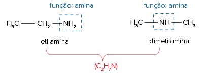
As duas substâncias são aminas (primária e secundária, respectivamente) e têm a mesma fórmula molecular, mas diferentes cadeias. A etilamina tem cadeia aberta, saturada,
homogênea e normal, enquanto a dimetilamina tem cadeia aberta, saturada,
heterogênea e normal.
Exemplo 3:
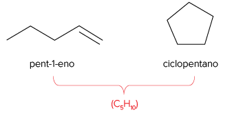
As duas substâncias são hidrocarbonetos e têm uma fórmula molecular igual, mas diferentes cadeias. O pent-1-eno tem cadeia
aberta ,
insaturada , homogênea e normal, enquanto o ciclopentano tem cadeia
fechada ,
saturada , homogênea e normal.
Isomeria constitucional de posição
Duas ou mais substâncias são classificadas como isômeros de posição quando apresentam a mesma fórmula molecular, a mesma função orgânica, o mesmo tipo de cadeia e
diferentes posições do grupo funcional ,das insaturações ou dos grupos substituintes.
Veja alguns exemplos:
Exemplo 1:
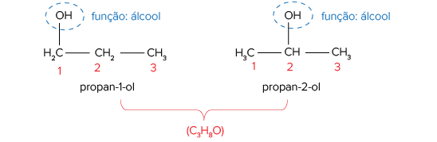
Observe que as duas substâncias são álcoois e têm a mesma fórmula molecular, o mesmo tipo de cadeia (aberta, saturada, homogênea e normal), mas
diferentes posições do grupo hidroxila , que caracteriza a função álcool.
Exemplo 2:
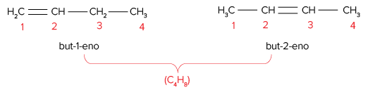
As duas substâncias são hidrocarbonetos e têm a mesma fórmula molecular, o mesmo tipo de cadeia (aberta, insaturada, homogênea, normal), mas diferentes
posições para a insaturação . No but-1-eno, a ligação dupla está no carbono número 1 e, no but-2-eno, ela está no carbono número 2.
Exemplo 3:
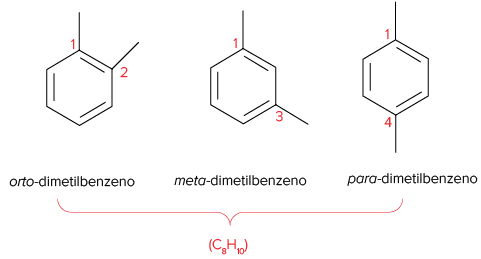
As duas substâncias são hidrocarbonatos, cuja fórmula molecular e tipo de cadeia (fechada, insaturada, homogênea, ramificada) são iguais, mas com
diferentes posições para os grupos substituintes . A posição
orto representa grupos substituintes na posição 1 e 2 do anel benzênico, a posição
meta representa grupos substituintes na posição 1 e 3 do anel benzênico, e a posição
para representa grupos substituintes na posição 1 e 4 do anel benzênico.
Isomeria constitucional de compensação ou metameria
Metameria é um caso especial de isomeria de posição, no qual os isômeros diferem quanto à posição do heteroátomo, logo só ocorrem com cadeias heterogêneas.
Veja o exemplo:
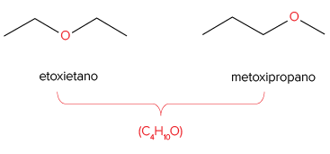
Observe que as duas substâncias são éteres de mesma fórmula molecular, o mesmo tipo de cadeia (aberta, saturada,
heterogênea e normal), mas
diferentes posições do heteroátomo .
Discussão em sala
A isomeria em laboratórios
Um químico recebeu um novo carregamento de reagentes. A etiqueta de um dos frascos apresentava somente uma informação: a fórmula molecular C2H6O.
Reflita em sala de aula: quais compostos orgânicos poderiam estar no frasco?
Na isomeria, os compostos de mesma fórmula molecular apresentam diferentes fórmulas estruturais e, por isso, têm propriedades químicas diferentes. Sabendo disso, discuta com seus colegas sobre os dados que deveriam estar
complementando o rótulo do reagente.
FAG-PR 2016 Para que os carros tenham melhor desempenho, adiciona-se um antidetonante na gasolina e, atualmente, usa-se um composto, cuja fórmula estrutural é:
Com essa mesma fórmula molecular são representados os seguintes pares:
metóxi-butano e etóxi-propano.
3-metil-butan-2-ol e etóxi-isopropano.
Os pares I e II são, respectivamente:
isômeros de cadeia e tautômeros.
tautômeros e isômeros funcionais.
isômeros de posição e isômeros de compensação (ou metâmeros).
isômeros de compensação (ou metâmeros) e isômeros funcionais.
Nenhuma das alternativas anteriores.
Resolução
Alternativa D
Metóxi-butano e etóxi-propano são isômeros metâmeros, ou seja, diferem entre si pela posição do heteroátomo (no caso, o oxigênio).
3-metilbutan-2-ol e etóxi-isopropano são isômeros funcionais, sendo, respectivamente, um álcool e um éter.
Aplicando conhecimentos
1
O que são isômeros?
2
Quais são os tipos de isomeria constitucional?
3
O éter etílico e metílico (metoxietano) é isômero de função de dois álcoois. Escreva as fórmulas estruturais dos três compostos envolvidos e dê nome aos álcoois.
4
Os compostos 2-metilpenta-1,4-dieno e 3-metilpenta-1,4-dieno são isômeros constitucionais? Desenhe as fórmulas estruturais de cada composto para justificar e, em caso positivo de isomeria, classifique-a quanto ao tipo.
5
Existem dois isômeros planos para a fórmula C4H10.
Escreva a fórmula estrutural e o nome de cada isômero.
Classifique os isômeros quanto ao tipo de isomeria
Qual isômero apresentará menor temperatura de ebulição?
6
Uece 2018 O éter dietílico (etoxietano) é uma substância líquida volátil e altamente inflamável. Utilizado inicialmente como anestésico, seu uso foi descontinuado pelo risco de explosão. Atualmente serve como ótimo solvente
para experiências químicas em laboratórios. Este composto orgânico é isômero de um álcool primário de cadeia não ramificada, cujo nome é:
butan-2-ol.
metilpropan-2-ol.
butan-1-ol.
pentan-1-ol.
Consolidando saberes
1
Mackenzie-SP Considere a nomenclatura IUPAC dos seguintes hidrocarbonetos:
metil-ciclobutano.
3-metil-pentano.
pentano.
ciclo-hexano.
pent-2-eno.
A alternativa que relaciona corretamente compostos isoméricos é:
I e III
III e V
I e V
II e IV
2
Uerj Em uma das etapas do ciclo de Krebs, a enzima aconitase catalisa a isomerização de citrato em isocitrato, de acordo com a seguinte equação química:
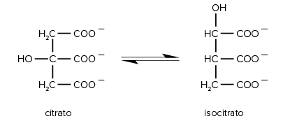
A isomeria plana que ocorre entre o citrato e o isoci-trato é denominada de:
cadeia.
função.
posição.
compensação.
3
UFU-MG 2018 Dentre os estimulantes do chá, a teofilina e a teobromina pertencem a uma classe de compostos orgânicos, chamada xantina. Ambas têm vários efeitos fisiológicos no corpo. A teofilina relaxa a musculatura lisa
das vias aéreas, tornando a respiração mais fácil. Já a teobromina pode estimular o coração e tem um leve efeito diurético, melhorando o fluxo sanguíneo ao redor do corpo.
Disponível em: <https://www.dicasnutricao.com.br/estimulantes-do-cha/>.Acesso em: 25 mar. 2018.
As substâncias citadas possuem as seguintes fórmulas moleculares
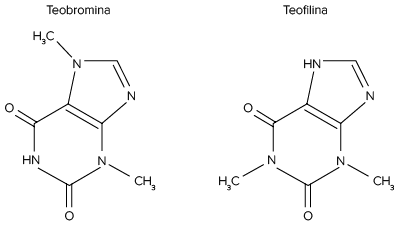
Essas substâncias são:
alótropos com fórmulas e com massas moleculares diferentes.
alcaloides de massas moleculares diferentes e fórmulas estruturais distintas.
amidas de mesma fórmula molecular e massas molares iguais.
isômeros (C7H8N4O2) e possuem a mesma massa molecular.
1
Uece As cetonas, amplamente usadas na indústria alimentícia para a extração de óleos e gorduras de sementes de plantas, e os aldeídos, utilizados como produtos intermediários na obtenção de resinas sintéticas, solventes,
corantes, perfumes e curtimento de peles, podem ser isômeros.
Assinale a opção que apresenta a estrutura do isômero do hexanal.
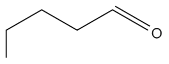
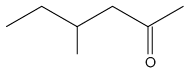
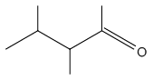
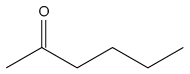
5
IFSul-RS 2017 Os nitritos são usados como conservantes químicos em alimentos enlatados e em presuntos, salsichas, salames, linguiças e frios em geral. Servem para manter a cor desses alimentos e proteger contra a contaminação
bacteriana. Seu uso é discutido, pois essas substâncias, no organismo, podem converter-se em perigosos agentes cancerígenos, as nitrosaminas. A seguir, temos a representação de duas nitrosaminas:
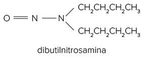
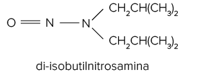
Essas nitrosaminas são isômeras de:
cadeia.
função.
posição.
tautomeria.
6
Uece 2016 O ácido pentanoico (conhecido como ácido valérico) é um líquido oleoso, com cheiro de queijo velho, tem aplicações como sedativo e hipnótico. Se aplicado diretamente na pele, tem uma efetiva ação sobre a acne.
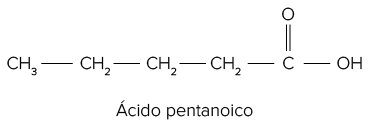
De acordo com sua fórmula estrutural, seu isômero correto é o:
propanoato de etila.
etóxi-propano.
3-metil-butanal.
pentan-2-ona.
7
Unicamp-SP 2016 Atualmente, parece que a Química vem seduzindo as pessoas e tem-se observado um número cada vez maior de pessoas portando tatuagens que remetem ao conhecimento químico. As figuras a seguir mostram duas
tatuagens muito parecidas, com as correspondentes imagens tatuadas mais bem definidas abaixo.
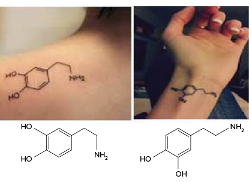
As imagens representam duas fórmulas estruturais, que correspondem a dois:
compostos que são isômeros entre si.
modos de representar o mesmo composto.
compostos que não são isômeros.
compostos que diferem nas posições das ligações duplas.
8
Cefet-MG O ácido butanoico é um composto orgânico que apresenta vários isômeros, entre eles substâncias de funções orgânicas diferentes. Considerando ésteres e ácidos carboxílicos, o número de isômeros que esse ácido
possui é:
3
4
5
7
8
Superação
Uece 2017 Isomeria é o fenômeno pelo qual duas substâncias compartilham a mesma fórmula molecular, mas apresentam estruturas diferentes, ou seja, o rearranjo dos átomos difere em cada caso.Observe as estruturas apresentadas
a seguir, com a mesma fórmula molecular C4H10O:
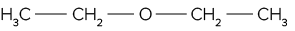
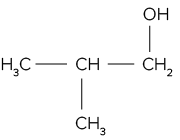
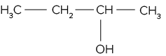
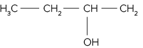
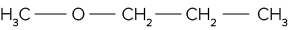
Assinale a opção em que as estruturas estão corretamente associadas ao tipo de isomeria.